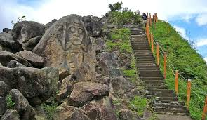

Agustín es un municipio colombiano ubicado en el sur del departamento de Huila. Hace parte de la región del Sur del Alto Magdalena, donde se encuentra el más alto valle del río Magdalena, resguardado por las primeras estribaciones de las cordilleras central y oriental. Yace sobre la parte oriental del macizo colombiano. Su extensión territorial es de 1.574 km², su altura es de 1.730 m s. n. m. y su temperatura promedio es de 18 °C
